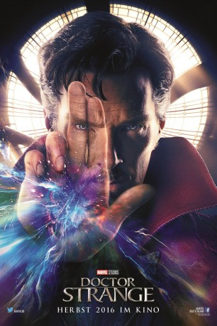

gesehen am 14.04.2017
gesehen am 14.04.2017 
 IMDB-Wertung: 7.7 / 10
IMDB-Wertung: 7.7 / 10  Tomatometer: 89
Tomatometer: 89  Metascore:
Metascore: 
Doctor Stephen Strange ist ein arroganter, aber auch unglaublich talentierter Neurochirurg. Nach einem schweren Autounfall kann er seiner Tätigkeit trotz mehrerer Operationen und Therapien nicht mehr nachgehen. In seiner Verzweifelung wendet er sich schließlich von der Schulmedizin ab und reist nach Tibet, wo er bei der Einsiedlerin The Ancient One und ihrer Glaubensgemeinschaft lernt, sein verletztes Ego hinten anzustellen und in die Geheimnisse einer verborgenen mystischen Welt voller alternativer Dimensionen eingeführt wird. So entwickelt sich Doctor Strange nach und nach zu einem der mächtigsten Magier der Welt. Doch schon bald muss er seine neugewonnenen mystischen Kräfte nutzen, um die Welt vor einer Bedrohung aus einer anderen Dimension zu beschützen.
Jahr: 2016
Dauer: 115 Minuten
FSK: 12
Land: USA Studio: Walt Disney Studios Motion PicturesTonspuren: DTS - ,
Untertitel:
Auflösung: 1080p (1920x1080) Größe: 10076 MB
Genre: Action, Sci-Fi, Abenteuer, Fantasy
Regisseur: Scott Derrickson
Drehbuch: Fede Alvarez
Soundtrack:
Darsteller:
 Benedict Cumberbatch als Dr. Stephen Strange
Benedict Cumberbatch als Dr. Stephen Strange Chiwetel Ejiofor als Mordo
Chiwetel Ejiofor als Mordo Rachel McAdams als Christine Palmer
Rachel McAdams als Christine Palmer Benedict Wong als Wong
Benedict Wong als Wong Mads Mikkelsen als Kaecilius
Mads Mikkelsen als Kaecilius Tilda Swinton als The Ancient One
Tilda Swinton als The Ancient One Michael Stuhlbarg als Dr. Nicodemus West
Michael Stuhlbarg als Dr. Nicodemus West Benjamin Bratt als Jonathan Pangborn
Benjamin Bratt als Jonathan Pangborn Scott Adkins als Lucian / Strong Zealot
Scott Adkins als Lucian / Strong Zealot Alaa Safi als Tall Zealot
Alaa Safi als Tall Zealot Meera Syal als Dr. Patel
Meera Syal als Dr. Patel Amy Landecker als Dr. Bruner
Amy Landecker als Dr. Bruner Kobna Holdbrook-Smith als Physical Therapist
Kobna Holdbrook-Smith als Physical Therapist Pat Kiernan als Pat Kiernan
Pat Kiernan als Pat Kiernan Annarie Boor als Orderly , uncredited
Annarie Boor als Orderly , uncredited Dante Briggins als Orderly , uncredited
Dante Briggins als Orderly , uncredited Jill Buchanan als Physio Patient , uncredited
Jill Buchanan als Physio Patient , uncredited Bern Collaco als Orderly , uncredited
Bern Collaco als Orderly , uncredited Daniel Eghan als Hospital Visitor , uncredited
Daniel Eghan als Hospital Visitor , uncredited Martavious Gayles als Orderly , uncredited
Martavious Gayles als Orderly , uncredited Chris Hemsworth als Thor , uncredited
Chris Hemsworth als Thor , uncredited Mo Idriss als New York Pedestrian , uncredited
Mo Idriss als New York Pedestrian , uncredited Stan Lee als Man on Bus , uncredited
Stan Lee als Man on Bus , uncredited Faith Logan als Pedestrian , uncredited
Faith Logan als Pedestrian , uncredited Shina Shihoko Nagai als Martial Artist / Waitress , uncredited
Shina Shihoko Nagai als Martial Artist / Waitress , uncredited Jag Patel als Pedestrian , uncredited
Jag Patel als Pedestrian , uncredited Nancy Ellen Shore als New York pedestrian / bus passenger , uncredited
Nancy Ellen Shore als New York pedestrian / bus passenger , uncredited Tina Simmons als New York Tourist , uncredited
Tina Simmons als New York Tourist , uncredited Clem So als Kamar-Taj Disciple , uncredited
Clem So als Kamar-Taj Disciple , uncreditedDatei: X:\Comic-Filme\Doctor Strange (2016, FSK12, 1920x1080) 3D.mkv seit 27.02.2017
Festplatte: Comicverfilmungen+MusikCD
 Es gibt insgesamt 44 Filme in der Gruppe 'Comic-Filme'
Es gibt insgesamt 44 Filme in der Gruppe 'Comic-Filme'